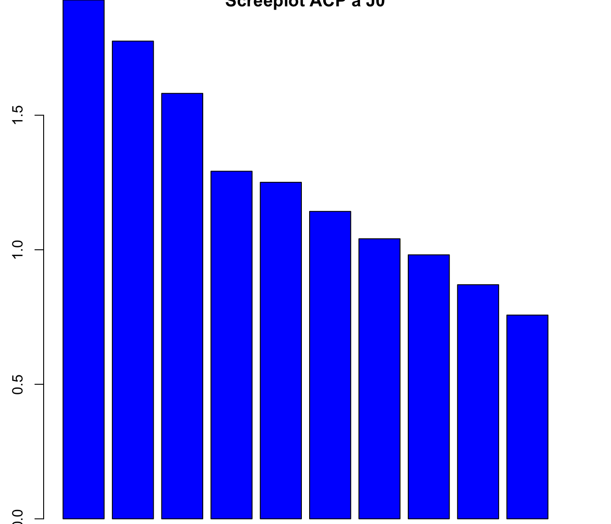

library(readxl)
auto_eval <- read_excel("/Users/thomashusson/Documents/Projets/M2biostatistiques/devoir_stats_avancees/outils autoeval.xls")
groupe <- read_excel("/Users/thomashusson/Documents/Projets/M2biostatistiques/devoir_stats_avancees/outils groupe.xls")
hdrs <- read_excel("/Users/thomashusson/Documents/Projets/M2biostatistiques/devoir_stats_avancees/outils hdrs.xls")Devoir Statistiques Avancées
Note
Consigne :
Étude d’épidémiologie clinique avec mesures répétées
Données :
146 patients déprimés
Évaluations à J0, J4, J7, J14, J21, J28, J42, J56
Autoévaluation (SCL90) et hétéroévaluation (échelle de dépression de Hamilton)
Questions :
Validation de l’échelle de dépression de Hamilton aux temps J0 et J56
Comparaison de la réponse au traitement entre deux groupes de patients (groupe=0 et groupe=1) en utilisant le score brut de Hamilton avec une approche LOCF puis un modèle mixte
Réponse à la question 2 en utilisant un critère binaire censuré « réponse au traitement » défini par une chute de 50% à l’échelle de Hamilton par rapport à J0
Fichiers :
Fichier groupe (
outil groupe.xlsx) (2 sous-groupes de patients)Fichier autoévaluation (
outil autoeval.xlsx) (SCL 90)Fichier hdrs (
outil hdrs.xlsx) (échelle de Hamilton)
| # Gestion des données |
| Le jeu de données comporte trois fichiers Excel : |
0.1 Import des données
0.2 Data management
0.2.1 Visualisation des données
head(auto_eval)# A tibble: 6 × 92
NUMERO VISIT Q1 Q2 Q3 Q4 Q5 Q6 Q7 Q8 Q9 Q10 Q11
<dbl> <chr> <dbl> <dbl> <dbl> <dbl> <dbl> <dbl> <dbl> <dbl> <dbl> <dbl> <dbl>
1 96 J0 2 3 4 4 1 0 0 3 4 4 4
2 96 J4 0 4 4 4 2 0 0 4 4 4 4
3 96 J7 3 3 3 3 1 0 0 4 4 34 4
4 96 J14 0 1 0 4 1 0 0 1 3 3 4
5 96 J21 0 0 1 1 1 0 0 1 1 1 3
6 96 J28 0 1 0 1 1 0 0 4 4 3 4
# ℹ 79 more variables: Q12 <dbl>, Q13 <dbl>, Q14 <dbl>, Q15 <dbl>, Q16 <dbl>,
# Q17 <dbl>, Q18 <dbl>, Q19 <dbl>, Q20 <dbl>, Q21 <dbl>, Q22 <dbl>,
# Q23 <dbl>, Q24 <dbl>, Q25 <dbl>, Q26 <dbl>, Q27 <dbl>, Q28 <dbl>,
# Q29 <dbl>, Q30 <dbl>, Q31 <dbl>, Q32 <dbl>, Q33 <dbl>, Q34 <dbl>,
# Q35 <dbl>, Q36 <dbl>, Q37 <dbl>, Q38 <dbl>, Q39 <dbl>, Q40 <dbl>,
# Q41 <dbl>, Q42 <dbl>, Q43 <dbl>, Q44 <dbl>, Q45 <dbl>, Q46 <dbl>,
# Q47 <dbl>, Q48 <dbl>, Q49 <dbl>, Q50 <dbl>, Q51 <dbl>, Q52 <dbl>, …head(hdrs)# A tibble: 6 × 20
NUMERO VISIT HAMD1 HAMD2 HAMD3 HAMD4 HAMD5 HAMD6 HAMD7 HAMD8 HAMD9 HAMD10
<dbl> <chr> <dbl> <dbl> <dbl> <dbl> <dbl> <dbl> <dbl> <dbl> <dbl> <dbl>
1 96 J0 3 2 3 2 2 2 3 2 3 4
2 96 J4 2 2 2 2 2 2 3 1 0 2
3 96 J7 0 0 0 2 2 2 3 1 1 0
4 96 J14 1 0 0 0 0 0 3 1 0 2
5 96 J21 0 0 0 0 0 0 3 0 0 2
6 96 J28 0 0 0 0 0 0 1 0 0 0
# ℹ 8 more variables: HAMD11 <dbl>, HAMD12 <dbl>, HAMD13 <dbl>, HAMD14 <dbl>,
# HAMD15 <dbl>, HAMD16A <dbl>, HAMD16B <dbl>, HAMD17 <dbl>head(groupe)# A tibble: 6 × 2
NUMERO GROUPE
<dbl> <dbl>
1 96 0
2 157 1
3 22 0
4 21 0
5 38 0
6 37 1Le dataframe auto_eval contient les scores d’autoévaluation (SCL90) pour chaque patient (NUMERO) à différents temps de visite (VISIT). Chaque colonne Q1 à Q90 représente une question spécifique du questionnaire.
Le dataframe hdrs contient les scores d’hétéroévaluation (échelle de dépression de Hamilton) pour chaque patient à différents temps de visite. Chaque colonne HAMD1 à HAMD17 représente un item spécifique de l’échelle de Hamilton.
Le dataframe groupe contient l’information sur le groupe de chaque patient (0 ou 1)
0.2.2 Appliquer les groupes de patients à chacun des dataframe
auto_eval <- merge(auto_eval, groupe, by = "NUMERO", all.x = TRUE)
head(auto_eval) NUMERO VISIT Q1 Q2 Q3 Q4 Q5 Q6 Q7 Q8 Q9 Q10 Q11 Q12 Q13 Q14 Q15 Q16 Q17 Q18
1 3 J0 3 3 2 1 1 2 0 0 2 2 3 3 0 3 1 0 1 3
2 3 J4 2 4 2 1 3 0 0 0 2 2 3 4 0 4 1 0 2 2
3 3 J7 1 3 3 30 13 1 0 0 2 3 3 3 0 4 1 0 1 1
4 4 J0 3 3 4 2 3 2 3 1 2 3 4 4 1 3 2 0 1 2
5 4 J4 2 1 1 0 0 0 0 0 2 2 1 3 0 3 1 0 1 0
6 4 J7 2 2 2 1 0 0 1 0 3 3 3 3 0 3 1 0 1 2
Q19 Q20 Q21 Q22 Q23 Q24 Q25 Q26 Q27 Q28 Q29 Q30 Q31 Q32 Q33 Q34 Q35 Q36 Q37
1 0 4 1 3 3 3 0 3 2 3 3 3 3 0 2 3 2 2 1
2 3 4 1 3 3 3 0 4 1 4 3 4 3 0 3 2 3 1 0
3 1 4 1 4 3 4 0 3 1 4 4 4 4 0 3 3 2 1 0
4 1 2 2 0 2 3 0 4 2 3 3 4 4 4 1 1 2 1 0
5 0 0 1 0 1 2 0 3 1 3 3 4 4 3 0 1 1 1 0
6 1 1 1 0 1 2 0 4 0 4 1 3 3 2 1 0 0 1 1
Q38 Q39 Q40 Q41 Q42 Q43 Q44 Q45 Q46 Q47 Q48 Q49 Q50 Q51 Q52 Q53 Q54 Q55 Q56
1 1 3 3 2 2 1 2 3 2 0 2 2 3 2 1 3 2 3 2
2 2 4 4 2 1 1 3 1 3 0 2 2 3 1 1 3 2 4 2
3 2 3 0 1 1 1 1 2 3 0 1 1 3 1 1 3 1 4 1
4 3 4 4 4 3 3 0 3 3 0 3 3 3 2 3 2 4 4 3
5 2 3 1 3 0 0 0 1 3 0 4 4 2 2 1 0 4 4 4
6 2 4 2 3 1 2 0 1 3 0 4 2 1 3 2 1 4 4 2
Q57 Q58 Q59 Q60 Q61 Q62 Q63 Q64 Q65 Q66 Q67 Q68 Q69 Q70 Q71 Q72 Q73 Q74 Q75
1 4 2 2 3 3 3 0 0 3 1 0 2 3 2 3 3 0 1 3
2 4 1 1 0 1 0 0 2 2 3 0 0 2 0 4 4 0 1 3
3 4 1 1 1 2 0 1 1 2 1 1 0 1 2 3 3 0 1 4
4 4 3 2 1 2 3 4 0 2 3 NA 0 3 2 3 3 1 1 0
5 3 1 1 0 0 2 3 0 2 3 3 1 2 1 3 2 1 0 0
6 3 3 2 0 1 1 3 0 2 3 2 0 1 0 3 2 0 1 1
Q76 Q77 Q78 Q79 Q80 Q81 Q82 Q83 Q84 Q85 Q86 Q87 Q88 Q89 Q90 GROUPE
1 1 3 3 1 1 0 1 1 0 0 2 3 0 1 3 1
2 2 2 3 0 1 0 0 1 0 0 3 1 0 2 3 1
3 3 3 3 1 0 1 0 1 0 0 3 1 1 3 1 1
4 0 3 3 4 3 2 2 2 1 0 2 3 3 3 4 1
5 1 2 3 4 1 0 1 0 1 0 2 3 2 3 4 1
6 1 1 3 4 1 0 1 1 0 0 2 3 3 1 4 1# hdrs + groupe
hdrs <- merge(hdrs, groupe, by = "NUMERO", all.x = TRUE)
head(hdrs) NUMERO VISIT HAMD1 HAMD2 HAMD3 HAMD4 HAMD5 HAMD6 HAMD7 HAMD8 HAMD9 HAMD10
1 0 J0 3 2 2 1 1 0 3 1 2 3
2 3 J0 3 1 1 2 1 0 3 1 2 3
3 3 J4 3 1 1 2 1 0 3 1 2 3
4 3 J7 3 1 1 1 1 1 3 2 2 3
5 4 J0 3 1 1 0 2 0 3 1 2 3
6 4 J4 3 1 1 0 2 0 3 1 1 2
HAMD11 HAMD12 HAMD13 HAMD14 HAMD15 HAMD16A HAMD16B HAMD17 GROUPE
1 4 0 2 2 2 0 NA 1 1
2 3 0 2 1 2 0 NA 0 1
3 3 2 2 1 2 NA 0 0 1
4 3 2 2 2 3 NA 0 0 1
5 3 1 2 2 3 1 NA 0 1
6 3 0 2 2 3 0 NA 0 1Une colonne groupe a été ajoutée à chaque dataframe.
0.2.3 Restructuration des données : reshape long
library(reshape2)
hdrs_long <- melt(hdrs, id.vars = c("NUMERO", "VISIT", "GROUPE"),
variable.name = "ITEM", value.name = "SCORE")
head(hdrs_long) NUMERO VISIT GROUPE ITEM SCORE
1 0 J0 1 HAMD1 3
2 3 J0 1 HAMD1 3
3 3 J4 1 HAMD1 3
4 3 J7 1 HAMD1 3
5 4 J0 1 HAMD1 3
6 4 J4 1 HAMD1 3Idem pour le dataframe auto_eval :
auto_eval_long <- melt(auto_eval, id.vars = c("NUMERO", "VISIT", "GROUPE"),
variable.name = "QUESTION", value.name = "RESPONSE")
head(auto_eval_long) NUMERO VISIT GROUPE QUESTION RESPONSE
1 3 J0 1 Q1 3
2 3 J4 1 Q1 2
3 3 J7 1 Q1 1
4 4 J0 1 Q1 3
5 4 J4 1 Q1 2
6 4 J7 1 Q1 20.2.4 Création d’un dataframe large unique avec toutes les informations :
# 1. Ajouter le groupe à toutes les visites
df1 <- merge(auto_eval, groupe, by = "NUMERO", all.x = TRUE)
# 2. Fusionner auto-éval + HDRS par NUMERO + VISIT
df_all <- merge(df1, hdrs, by = c("NUMERO", "VISIT"), all = TRUE)On a donc :
un dataframe large
df_allavec toutes les informationsdeux dataframes larges
hdrsetauto_evalpour les analyses globales, contenant les informations de groupedeux dataframes longs
hdrs_longetauto_eval_longpour les analyses spécifiques, contenant les informations de groupe
0.2.5 Gestion des valeurs manquantes (et notamment de la question 16)
table(hdrs$HAMD16A, useNA = "ifany")
0 1 2 <NA>
771 105 87 90 table(hdrs$HAMD16B, useNA = "ifany")
0 1 2 <NA>
70 8 11 964 La question 16 de l’échelle de Hamilton est codée hdrs$HAMD16A ou hdrs$HAMD16B selon que la perte de poids est déclarée ou appréciée par des pesées hebdomadaires.
Le problème est que : le fait que hdrs$HAMD16A soit rempli implique que hdrs$HAMD16B est manquant et vice-versa.
On peut donc créer une nouvelle variable HAMD16 qui prend la valeur de HAMD16A si elle est remplie, sinon la valeur de HAMD16B.
hdrs$HAMD16 <- ifelse(!is.na(hdrs$HAMD16A), hdrs$HAMD16A, hdrs$HAMD16B)
table(hdrs$HAMD16, useNA = "ifany")
0 1 2 <NA>
841 113 98 1 Ici, on a transformé les deux variables HAMD16A et HAMD16B en une seule variable HAMD16 sans valeurs manquantes.
La nouvelle variable HAMD16 est codée 0 à 2 selon les valeurs initiales de HAMD16A et HAMD16B.
1 Question 1 : Validation de l’échelle de dépression de Hamilton aux temps J0 et J56
L’HDRS est :
Une hétéro-évaluation
Une échelle multi-items
Et un instrument théorique permettant la mesure d’un construit latent : la sévérité dépressive (construit latent = quelque chose que l’on veut mesurer mais qu’on ne peut pas observer directement)
Pour valider l’échelles de Hamilton, on propose 3 étapes :
Validité de structure : que mesure réellement l’instrument ?
Précision / Fidélité : qualité technique de la mesure
Validité de construit (convergente)
Sa fiabilité / reproductibilité
Sa structure interne aux temps spécifiés (J0 et J56)
1.1 Inspection des données pour réponse à la question
1.1.1 Nombre de patients par visite
table(hdrs$VISIT, deparse.level = 1)
J0 J14 J21 J28 J4 J42 J56 J7
146 133 129 127 139 122 120 137 146 patients à J0
120 patients à J56 (donc 26 perdus de vue)
1.1.2 Structure des scores aux questions HDRS
describe(hdrs)Description of hdrs
Numeric
mean median var sd valid.n
NUMERO 91.29 94 2780.79 52.73 1053
HAMD1 1.74 2 1.38 1.17 1052
HAMD2 0.91 1 0.70 0.84 1052
HAMD3 0.55 0 0.63 0.79 1052
HAMD4 0.94 1 0.66 0.81 1052
HAMD5 0.89 1 0.63 0.79 1052
HAMD6 0.74 1 0.60 0.78 1052
HAMD7 1.94 2 1.57 1.25 1052
HAMD8 0.84 1 0.73 0.86 1052
HAMD9 0.94 1 0.92 0.96 1052
HAMD10 1.80 2 1.12 1.06 1052
HAMD11 1.34 1 0.80 0.89 1052
HAMD12 0.65 1 0.47 0.69 1052
HAMD13 1.14 1 0.58 0.76 1052
HAMD14 1.17 1 0.59 0.77 1052
HAMD15 1.09 1 0.88 0.94 1052
HAMD16A 0.29 0 0.39 0.62 963
HAMD16B 0.34 0 0.48 0.69 89
HAMD17 0.14 0 0.14 0.37 1052
GROUPE 0.47 0 0.25 0.50 1053
HAMD16 0.29 0 0.39 0.63 1052
Factor
VISIT J0 J4 J7 J14 J21 J28 J42 J56
Count 146.00 139.0 137.00 133.00 129.00 127.00 122.00 120.0
Percent 13.87 13.2 13.01 12.63 12.25 12.06 11.59 11.4
Mode J0 # compte des valeurs manquantes par variable
sapply(hdrs, function(x) sum(is.na(x))) NUMERO VISIT HAMD1 HAMD2 HAMD3 HAMD4 HAMD5 HAMD6 HAMD7 HAMD8
0 0 1 1 1 1 1 1 1 1
HAMD9 HAMD10 HAMD11 HAMD12 HAMD13 HAMD14 HAMD15 HAMD16A HAMD16B HAMD17
1 1 1 1 1 1 1 90 964 1
GROUPE HAMD16
0 1 Les items HDRS sont codés de 0 à 2 ou 0 à 4 selon les questions.
Il y a des données avec peu de valeurs manquantes (1 valeur manquante par item sauf pour HAMD16A et HAMD16B, ce qui est logique car HAMD16A et HAMD16B sont exclusives l’une de l’autre).
1.2 Validité de structure : que mesure réellement l’instrument ?
L’objectif est de vérifier si les 17 items HDRS
reflètent un seul facteur latent (dépression)
ou plusieurs dimensions latentes (anxiété, somatisation, agitation, sommeil…), ce qui change l’interprétation du score total.
On peut utiliser 2 méthodes :
Analyse en Composantes Principales (ACP) : permet d’explorer rapidement la structure
Analyse Factorielle (AF) : méthode standard pour les instruments multi-items subjectifs
1.2.1 Analyse en Composantes Principales (ACP)
1.2.1.1 Préparation des données pour l’ACP : sous ensembles J0 et J56
## Sélection des items utilisés pour l’ACP
items_acp <- c("HAMD1","HAMD2","HAMD3","HAMD4","HAMD5","HAMD6",
"HAMD7","HAMD8","HAMD9","HAMD10","HAMD11","HAMD12",
"HAMD13","HAMD14","HAMD15","HAMD17")
## Sous-ensemble J0
hdrs_J0 <- subset(hdrs, VISIT == "J0")[ , items_acp]
## Sous-ensemble J56
hdrs_J56 <- subset(hdrs, VISIT == "J56")[ , items_acp]Les 16 items de la HDRS retenus (hors item 16, trop incomplet) sont entièrement renseignés à J0 et à J56, avec une variabilité suffisante (3 à 5 modalités par item).
Les distributions semblent montrer une amélioration clinique entre J0 et J56, avec une chute globale des scores, ce qui justifie de réaliser deux ACP distinctes pour explorer la structure dimensionnelle à chacun des deux temps.
1.2.1.2 ACP à J0
# ACP à J0
acp_J0 <- prcomp(hdrs_J0, center = TRUE, scale. = TRUE)
summary(acp_J0)Importance of components:
PC1 PC2 PC3 PC4 PC5 PC6 PC7
Standard deviation 1.3886 1.3325 1.25747 1.13662 1.11837 1.06891 1.02022
Proportion of Variance 0.1205 0.1110 0.09883 0.08074 0.07817 0.07141 0.06505
Cumulative Proportion 0.1205 0.2315 0.33032 0.41106 0.48923 0.56064 0.62570
PC8 PC9 PC10 PC11 PC12 PC13 PC14
Standard deviation 0.99051 0.93277 0.87021 0.83037 0.79789 0.77384 0.74435
Proportion of Variance 0.06132 0.05438 0.04733 0.04309 0.03979 0.03743 0.03463
Cumulative Proportion 0.68702 0.74139 0.78872 0.83182 0.87161 0.90903 0.94366
PC15 PC16
Standard deviation 0.68769 0.65458
Proportion of Variance 0.02956 0.02678
Cumulative Proportion 0.97322 1.00000# Graphique des valeurs propres
mdspca(hdrs_J0)
screeplot(acp_J0, main = "Screeplot ACP à J0", col = "blue", pch = 19)
À J0, la première composante principale n’explique que 12 % de la variance, ce qui est trop faible pour soutenir une structure unidimensionnelle. La variance est répartie sur de nombreuses composantes (les six premières représentent seulement 56 % du total), ce qui indique que les items ne mesurent pas un unique construit commun. Cette dispersion est compatible avec la structure hétérogène connue de l’HDRS (mélange d’items d’humeur, d’anxiété, de sommeil et de somatisation). L’échelle apparaît donc clairement multidimensionnelle à J0.